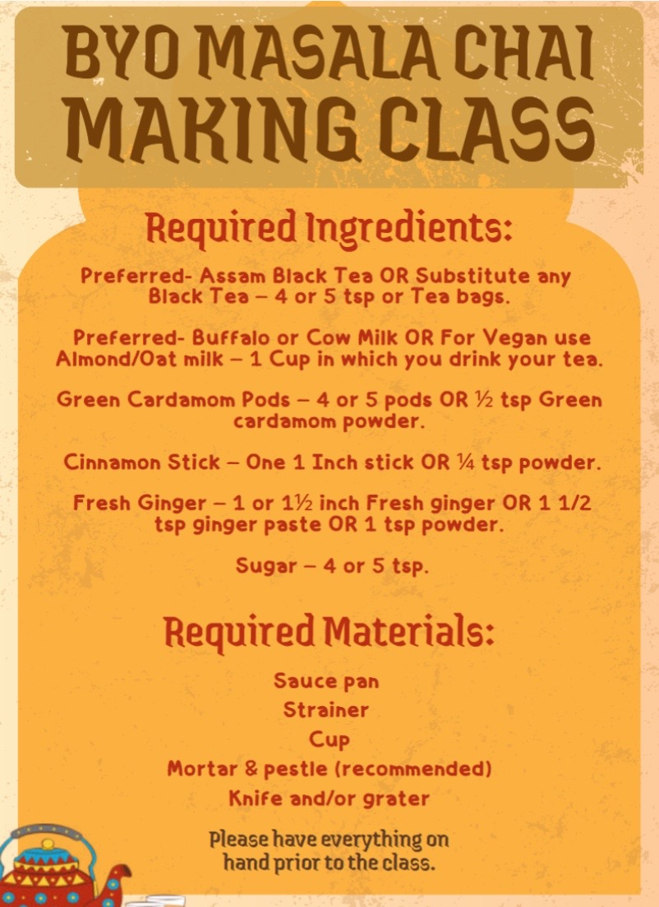

Masala chai
Ingredientes
2×
- 4 -5 vainas de cardamomo
- 1 rama de canela
- 3 cm de jengibre fresco
- 1 taza de agua
- 4 -5 cdtas de té negro
- 4 -5 cdtas de azúcar
- 1 taza de leche

Preparación
Paso 1
Machacar en el mortero 4 -5 vainas de cardamomo y 1 rama de canela pequeña, y rallar 3 cm de jengibre fresco.
Paso 2
Hervir las especias con 1 taza de agua unos minutos. Añadir 4 -5 cdtas de té negro (Assam) y 4 -5 cdtas de azúcar.
Paso 3
Añadir 1 taza de leche (o leche de almendra o avena), llevar a ebullición y colar.